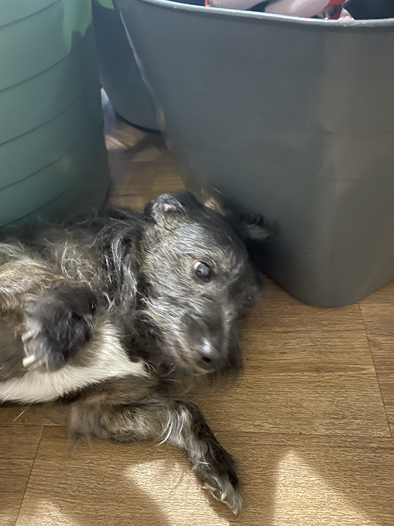

ABOUT
Chase is the oldest of the animals. We got chase after our old dog died of old age and ever since, he has become a main member of our family. Chase was adopted from a lady whose dogs had babies with his older brother being adopted by my nan.
LIKES
Chase has been part of my family for a long time and is naturally getting old. He still loves to run around, chasing balls just like any other dog which of course gets very annoying when you try to play cricket in the backyard. Chase also loves to sit on the backrest of the couch in the loungeroom like a cat and bark at any one and anything that happens to walk past my front yard.